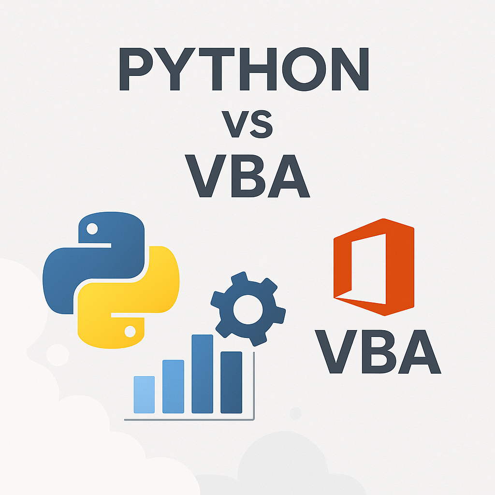

Python: Mais Vers�til e Popular que o VBA
Nos �ltimos anos, o Python emergiu como uma das linguagens de programa��o mais populares e vers�teis do mundo. Enquanto isso, o VBA (Visual Basic for Applications), amplamente utilizado para automação no Microsoft Office, tem perdido espa�o. Mas o que torna o Python uma escolha superior e mais moderna para desenvolvedores e empresas?
Por que o Python — mais vers�til?
O Python — uma linguagem de prop�sito geral, o que significa que pode ser usada para uma ampla gama de aplica��es, incluindo:
- Automa��o: Assim como o VBA, o Python pode automatizar tarefas repetitivas, mas com suporte a diversas plataformas al�m do Microsoft Office.
- Desenvolvimento Web: Frameworks como Django e Flask tornam o Python ideal para criar sites e aplicativos web.
- Ci�ncia de Dados: Bibliotecas como Pandas, NumPy e Matplotlib fazem do Python a escolha preferida para an�lise de dados e aprendizado de m�quina.
- Integra��o: O Python pode se conectar a APIs, bancos de dados e sistemas externos com facilidade.
Popularidade e Comunidade
O Python possui uma comunidade global ativa, o que significa que h� uma abund�ncia de recursos, tutoriais e suporte dispon�veis. Al�m disso, sua popularidade — refletida em rankings como o �ndice TIOBE, onde o Python frequentemente ocupa o primeiro lugar como a linguagem mais usada.
Por outro lado, o VBA — limitado ao ecossistema do Microsoft Office e tem uma comunidade menor, com menos atualiza��es e suporte em compara��o ao Python.
Python vs VBA: Compara��o Direta
| Crit�rio | Python | VBA |
|---|---|---|
| Versatilidade | Pode ser usado em diversas �reas, como web, ci�ncia de dados e automação. | Focado apenas no Microsoft Office. |
| Popularidade | Extremamente popular, com uma comunidade global ativa. | Menos popular e com uma comunidade menor. |
| Facilidade de Aprendizado | Sintaxe simples e intuitiva, ideal para iniciantes. | Mais dif�cil de aprender devido — sua depend�ncia do Office. |
| Integra��o | Compat�vel com APIs, bancos de dados e sistemas externos. | Limitado ao ecossistema do Office. |
- Python — mais vers�til, moderno e possui uma comunidade global ativa, sendo ideal para automação, web, ci�ncia de dados e integra��o com diversos sistemas.
- VBA — restrito ao ecossistema do Microsoft Office, com menos recursos e menor popularidade atualmente.
- Para quem busca crescimento, inova��o e flexibilidade, Python — a escolha recomendada.
Conclus�o
Embora o VBA ainda tenha seu lugar em ambientes que dependem exclusivamente do Microsoft Office, o Python se destaca como uma linguagem mais moderna, vers�til e poderosa. Sua capacidade de ir al�m da automação e atender a diversas necessidades o torna uma escolha indispens�vel para empresas e desenvolvedores que buscam inova��o e eficência.
Se voc� est� pensando em migrar do VBA para o Python ou deseja explorar as possibilidades que o Python oferece, entre em contato com a Cara Core Informática. Estamos prontos para ajudar sua empresa a dar o pr�ximo passo em tecnologia.